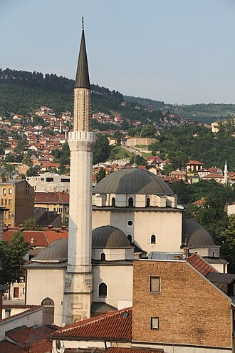

Tanıtım
La mosquée de Gazi Husrev-bey est située en Bosnie-Herzégovine, sur le territoire de la Ville de Sarajevo. Construite en 1531, elle est inscrite sur la liste des monuments nationaux de Bosnie-Herzégovine.
جامع الغازي خسرو بك ، مسجد جامع يقع في مدينة سراييفو في البوسنة والهرسك. وبني على يد الغازي خسرو بك
The Gazi Husrev-beg Mosque is a Sunni mosque in the city of Sarajevo, Bosnia and Herzegovina. Built in the 16th century, it is the largest historical mosque in Bosnia and Herzegovina and one of the most representative Ottoman structures in the Balkans.
Gazi Hüsrev Bey Camii veya Bey Camii, Bosna-Hersek'in başkenti Saraybosna'nın kalbi sayılan Başçarşı'da yer almaktadır. Bey Camii olarak da bilinir. Osmanlı mimarisinin en göze çarpan eserlerinden biri olup, Bosna Sancak Beyi Gazi Hüsrev Bey tarafından 1531 yılında Mimar Sinan'a inşa ettirilmiştir.
Masjid Gazi Husrev-beg adalah sebuah masjid di kota Sarajevo, Bosnia dan Herzegovina.
غازی خسرو بیگ مسجد جسے مختصراً بیگ مسجد بھی کہا جاتا ہے بوسنیا و ہرزیگووینا کے دارالحکومت سرائیوو کی اہم ترین مسجد ہے۔ اسے ملک کا اہم ترین اسلامی مرکز اور عثمانی طرز تعمیر کا شاہکار قرار دیا جاتا ہے۔
Die Gazi-Husrev-Beg-Moschee, verkürzt auch Begova-Moschee von 1530/31 (Bauinschrift) in Sarajevo ist die größte und eine der ältesten Moscheen Bosnien und Herzegowinas.
La moschea di Gazi Husrev-beg è un'importante moschea di Sarajevo. Costruita nel XVI secolo, è la più grande moschea storica della Bosnia ed Erzegovina e una delle strutture ottomane classiche più rappresentative dei Balcani. Fin dalla sua costruzione costituisce la moschea centrale di Sarajevo, per questo oggi funge anche come principale luogo di culto della Comunità Islamica di Bosnia ed Erzegovina. È situata nel quartiere Baščaršija, nella municipalità di Stari Grad, e rappresenta uno dei maggiori monumenti di richiamo per i turisti nella città.
De Gazi Husrev-Begmoskee, ook wel Begovamoskee, in Sarajevo is de grootste en oudste moskee in Bosnië-Herzegovina. Deze moskee is gesticht in 1526 door Gazi Husrev-Beg, een jongere neef van Sultan Bayezit II. Het ontwerp van de moskee is van hofarchitect Acem Esir Ali. Aan de bouwwerkzaamheden werkten ook arbeiders uit het toenmalige Ragusa mee.
गाजी हुस्रेव-बेग मस्जिद बोस्निया और हर्जेगोविना के सारायेवो शहर में स्थित एक सुन्नी मस्जिद है। 16वीं शताब्दी में निर्मित यह मस्जिद बोस्निया और हर्जेगोविना की सबसे बड़ी ऐतिहासिक मस्जिद है और बाल्कन क्षेत्र में सबसे प्रतिनिधि उस्मानी संरचनाओं में से एक है।
Мечеть Гази Хусрев-бега — мечеть в Сараево, Босния и Герцеговина. Была построена в XVI веке. Она является крупнейшей исторической мечетью в Боснии и Герцеговине и одним из самых представительных османских сооружений на Балканах. Будучи центральной мечетью Сараево с момента ее постройки, сегодня она также служит главной соборной мечетью мусульман в Боснии и Герцеговине. Она расположена в районе Башчаршия в муниципалитете Стари Град и, являясь одним из главных архитектурных памятников города, регулярно посещается туристами.
Gazi Husrev-beg-moskén, uppförd 1530/1531, är den största moskén i Sarajevo i Bosnien och Hercegovina. Den har sitt namn efter Gazi Hüsrev Bey som var bej över Bosniens sancak under största delen av 1521–1541.
Haritada
Belgeler ve bağlantılar
- Wikipédia — Français
- Wikipédia — العربية
- Wikipédia — English
- Wikipédia — Türkçe
- Wikipédia — Bahasa Indonesia
- Wikipédia — اردو
- Wikipédia — Deutsch
- Wikipédia — Italiano
- Wikipédia — Nederlands
- Wikipédia — हिन्दी
- Wikipédia — Русский
- Wikipédia — Svenska
- Wikidata — Q1255835
Veriler: Wikidata (CC0), her 3 ayda bir güncellenir. Yıl, binanın bilinen en eski inşa tarihidir: sonradan camiye dönüştürülmüş bir yapı için (Ayasofya gibi) özgün binanın tarihidir. Fotoğraflar: Wikimedia Commons, yazar ve lisans her fotoğrafın sayfasında.